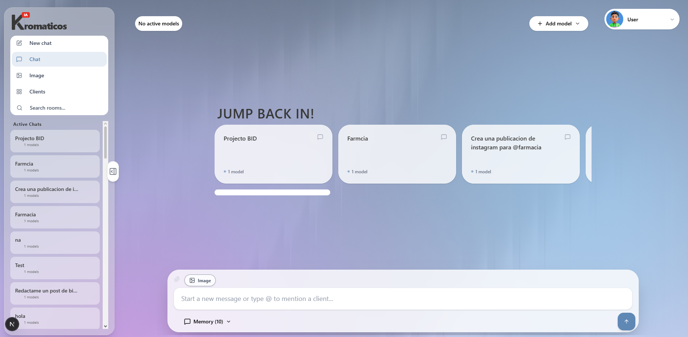
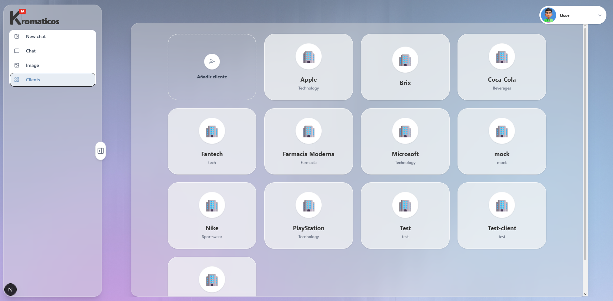
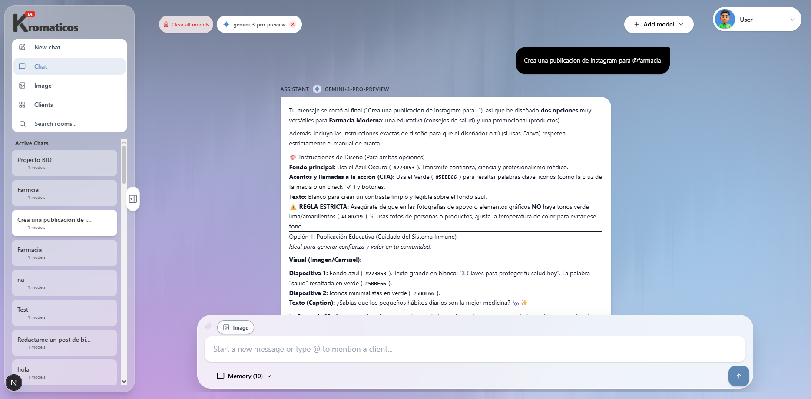
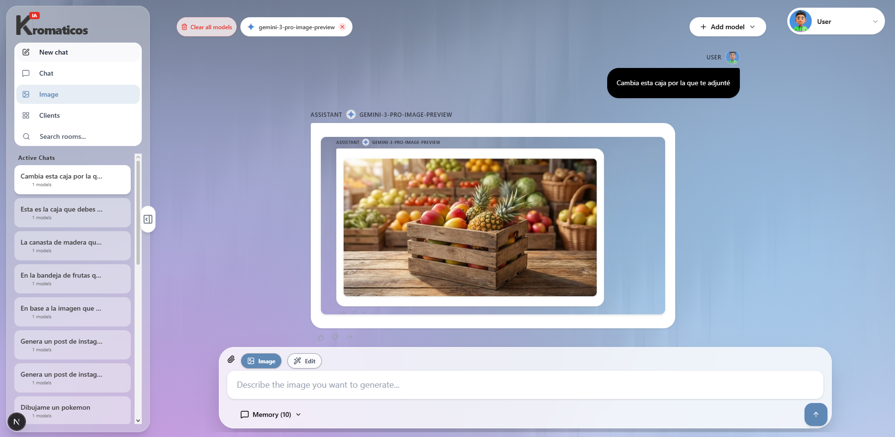
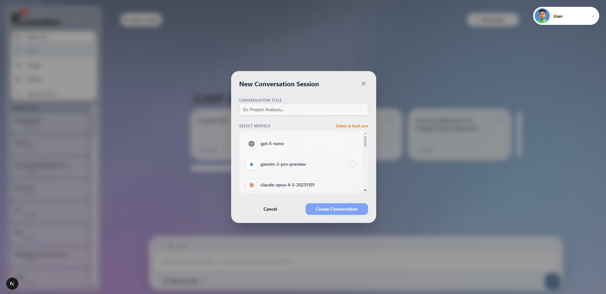
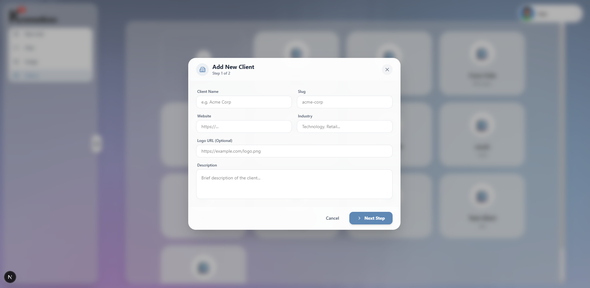
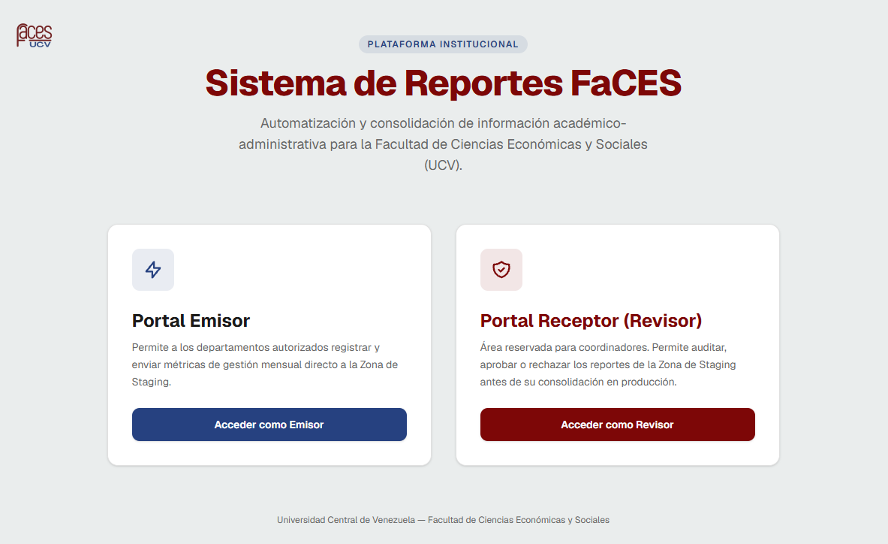

Hola, soy José Campos
Apasionado por la ciencia de datos, el Deep Learning, el desarrollo frontend de aplicaciones web y la arquitectura de sistemas y redes de computadoras.
Sobre mí
Actualmente curso el ciclo avanzado de computación, combinando bases teóricas sólidas con experiencia práctica en desarrollo frontend moderno (React, TypeScript), Machine Learning, Deep Learning y NLP. Además, desempeño el rol de preparador de la materia Redes de Computadoras.
Proyectos & Experiencia Profesional
Aplicación Web Gravo
Desarrollo y construcción integral del frontend para la aplicación web Gravo. Responsable de la arquitectura de la interfaz de usuario, consumo e integración de APIs RESTful, gestión avanzada de estado global y validación de esquemas de datos.
Capturas del Sistema (Haz clic para ampliar)

Main
Clients
Conversation
ConvImage
NewChat
NewClientSistema de Gestión de Reportes - FaCES
Desarrollo de un sistema integral para la gestión y recopilación de reportes institucionales. Implementación de una interfaz fluida en React para el frontend y Google Apps Scripts en el backend, automatizando el almacenamiento centralizado de datos en hojas de cálculo de Excel/Google Sheets y su despliegue operativo en la aplicación.
Capturas del Sistema (Haz clic para ampliar)

Main Departamentos
Departamentos
 Formulario
Formulario
 Receptor
Receptor
 Reportes
Reportes
ToxicityClassifier (Fine-tuned Transformer)
Modelo Transformer entrenado mediante fine-tuning para clasificación de toxicidad en texto (6 clases), gestionando el desbalance de clases y funciones de pérdida ponderadas.
Preparador de Redes de Computadoras
Diseño, aplicación y guía de sesiones prácticas de laboratorio para estudiantes universitarios, abarcando configuración de redes, simulación de topologías, enrutamiento y análisis de protocolos de comunicación.
Habilidades Técnicas
¿Hablamos?
Estoy disponible para oportunidades profesionales, proyectos de colaboración en Machine Learning o intercambio técnico.